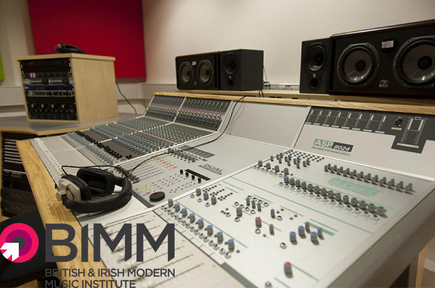

Acasă
Acasă Țări
Țări Catalog
Catalog Galerie foto
Galerie foto Experiente
Experiente Despre
DespreBritish and Irish Institute of Modern Music (BIMM)



Descriere
Institutele BIMM sunt lcoalizate in 8 orase in care muzica conteaza cel mai mult - Londra, Berlin, Hamburg, Dublin, Birmingham, Manchester, Bristol si Brighton - si este cea mai mare si renumita institutie care ofera educatie in domeniul muzicii contemporane in UK si Europa.
83% dintre absolventi lucreaza in 6 luni dupa terminarea studiilor la BIMM.
Printre acestia se numara James Bay, George Ezra, The Kooks, Izzy Bizu, Ed Drewitt (Songwriter - One Direction, Olly Murs, Little Mix), Jordan Whitmore (A&R Atlantic Records) si Natasha Bent (Coda Music Agency - Take That, Disclosure, The Prodigy, Jess Glynne, Bastille, Ellie Goulding and Imagine Dragons).
Peste 6 500 de studenti urmeaza cursurile BIMM si toti au acces la o multime de oportunitati in cadrul retelei de campusuri.
Informații generale
Tara: Marea Britanie
Limba de predare: engleza
Ani de studiu: BA/BMus 3 Year Degree & 1 Year Diploma
Inceput an: octombrie
Burse: Nu
Campusuri: Londra, Berlin, Hamburg, Dublin, Birmingham, Manchester, Bristol si Brighton
Aeroporturi: London Heathrow, London Gatwick si aeroporturile regionale
Cazare: BIMM a creat ‘Accommodation Advice Pack’ pentru a-i ajuta pe studenti sa gaseasca mai rapid si usor unde sa locuiasca. Institutul ii poate pune de asemenea in legatura cu alti studenti care cauta colegi de apartament - ‘The Accommodation Sharers List’ este trimisa studentilor in Acceptance Pack si pot utiliza si retelele de socializare (Facebook si Twitter) unde pot cunoaste si discuta pe tema cazarii.
Programe de studiu:
Performance (Drums, Vocals, Guitar, Bass): 1 Year Diploma & 3 Year Degree
Music Production: 1 Year Diploma & 3 Year Degree
Songwriting: 1 Year Diploma & 3 Year Degree
Music Business: 3 Year Degree
Event Management: 3 Year Degree